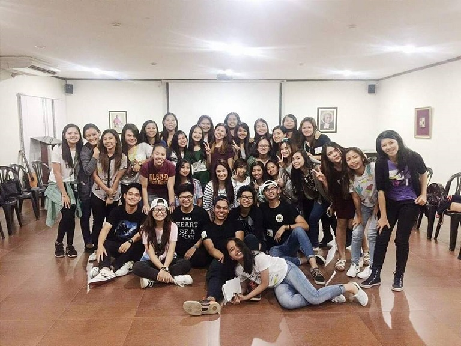

| Even though I'm still not done with college I know that I have learned a lot, not just acads related but life lessons as well.  |
I'll be sharing with you some of the lessons I learned in College!
1. Not everyone will like you but that's okay :-)
But as long as you have your true friends with you, it won't really matter.
2. Time management is the key!!
 Cramming and procrastination are your enemy.
College has taught me that my routine in highschool won't work now.
Time management is truly helpful to avoid staying up late for
projects, outputs that was given weeks ago.
3. You'll be able to do things, you didn't know you can do.
Cramming and procrastination are your enemy.
College has taught me that my routine in highschool won't work now.
Time management is truly helpful to avoid staying up late for
projects, outputs that was given weeks ago.
3. You'll be able to do things, you didn't know you can do.
 College is like a box full of surprises!
It kind of helped me to stay out of my comfort zone
and enjoy the rest of my college life.
4. College requires A LOT OF PATIENCE .
Patience to review a lot of lessons,
multi-task different school works,
and ofcourse extra patience for group activities :D
5. And lastly, NEVER GIVE UP!
It's okay to cry when frustrated or tired! But make sure
after that you'll stand tall, chin up and face the reality
again. Never give up because this journey is soooo worth it!
College is like a box full of surprises!
It kind of helped me to stay out of my comfort zone
and enjoy the rest of my college life.
4. College requires A LOT OF PATIENCE .
Patience to review a lot of lessons,
multi-task different school works,
and ofcourse extra patience for group activities :D
5. And lastly, NEVER GIVE UP!
It's okay to cry when frustrated or tired! But make sure
after that you'll stand tall, chin up and face the reality
again. Never give up because this journey is soooo worth it!
|